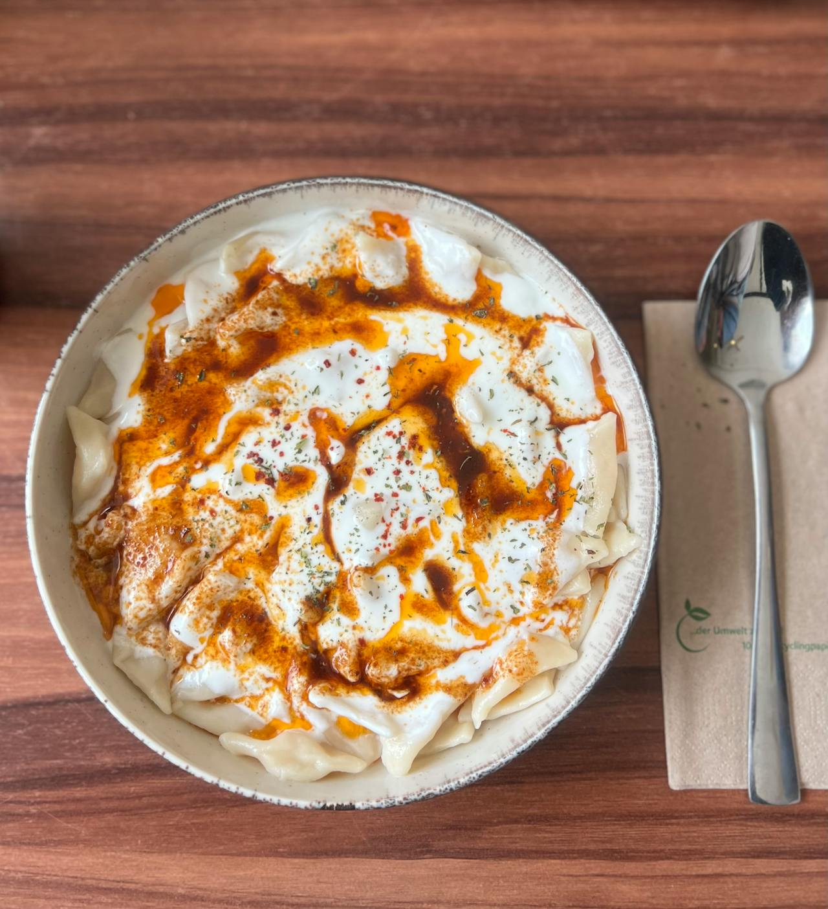

Home
Mantı

Description
Delicate Turkish dumplings filled with seasoned meat, served under a generous layer of garlicky yogurt and finished with a vibrant drizzle of spiced chili butter. The contrast of cool, creamy yogurt and warm, rich oil creates a deeply comforting and flavorful dish.
Ingredients
- 200 g ground beef or lamb
- 1 small onion, finely grated
- 1 clove garlic, minced
- 1-2 cloves garlic, finely grated
- 250 g plain Turkish yogurt
- 1 pack mantı dumplings (store-bought) or homemade
- 3 tbsp unsalted butter
- 1-2 tsp paprika or Turkish red pepper flakes
- ½ tsp dried mint (optional)
- Salt and black pepper, to taste
Steps
- Cook the mantı: Bring a large pot of salted water to a boil. Add mantı and cook according to package or until tender (about 6-10 minutes). Drain and transfer to a serving bowl.
- Prepare the yogurt sauce: Mix yogurt with garlic and a pinch of salt until smooth.
- Make the chili butter: Melt butter over medium heat. Add paprika or chili flakes and optional dried mint. Heat gently until fragrant and the butter turns slightly orange-red. Do not burn.
- Assemble: Spoon the garlicky yogurt generously over the warm mantı. Drizzle the hot chili butter on top, letting it streak across the yogurt as in the image.
- Serve: Finish with a light sprinkle of dried herbs or chili flakes if desired. Serve immediately. Afiyet olsun :)